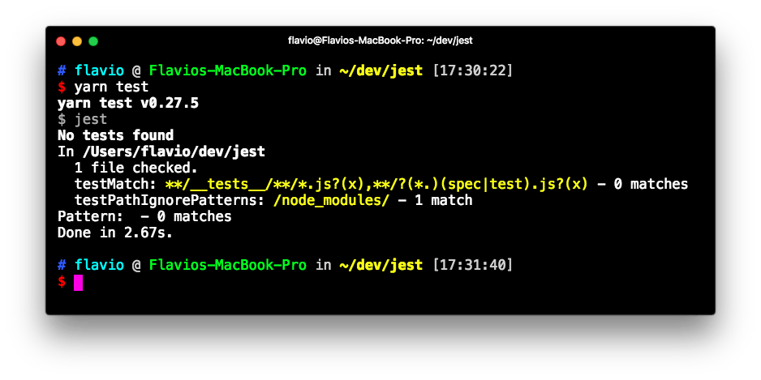
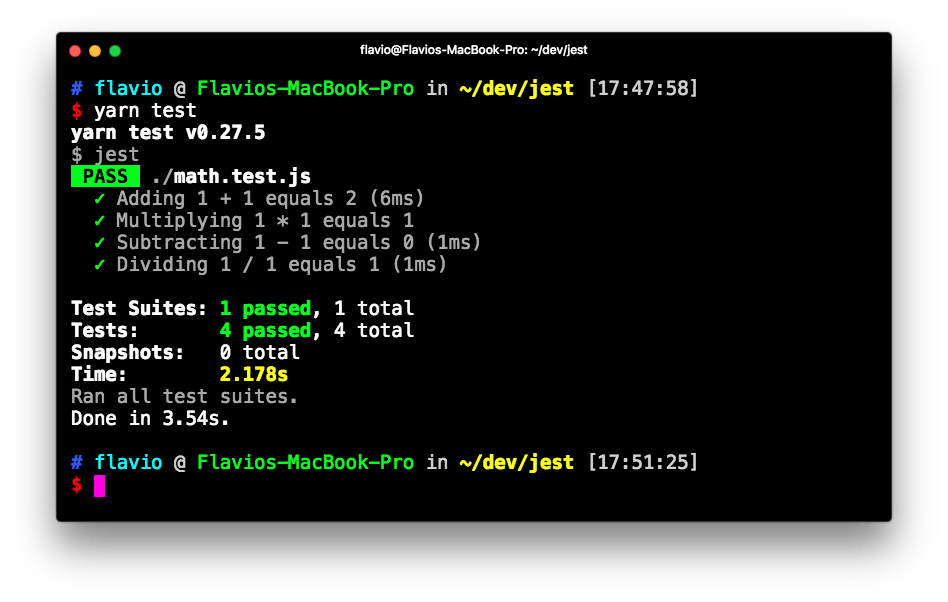
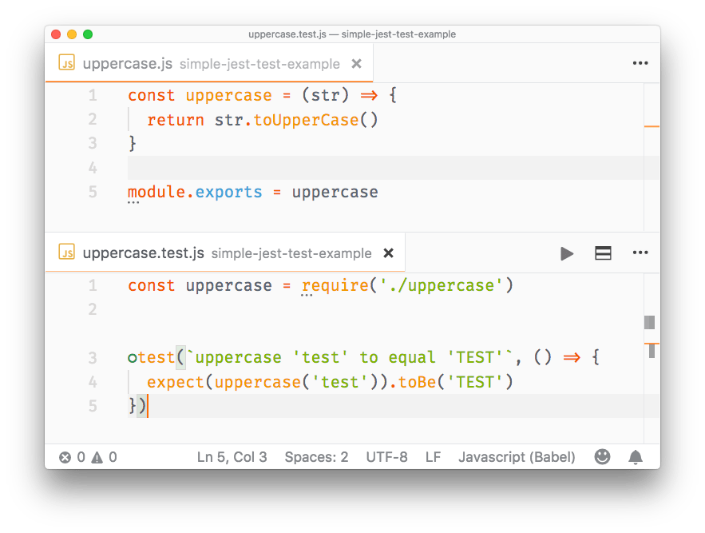
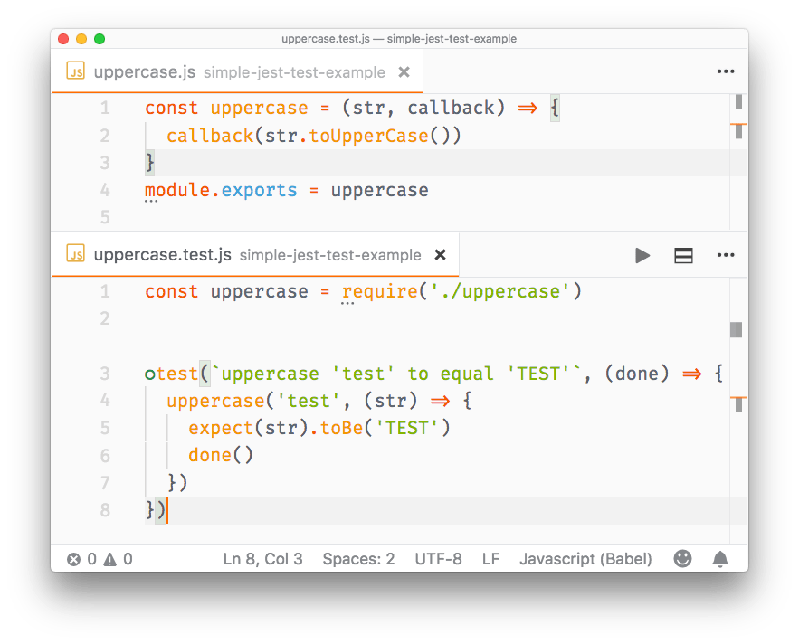
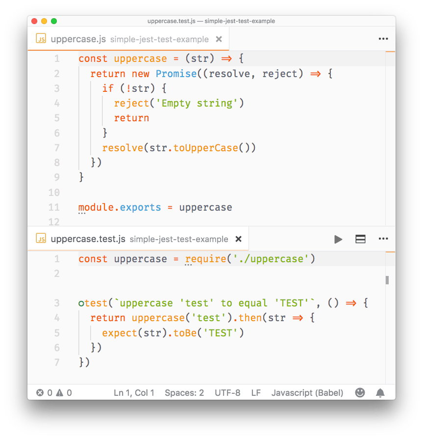
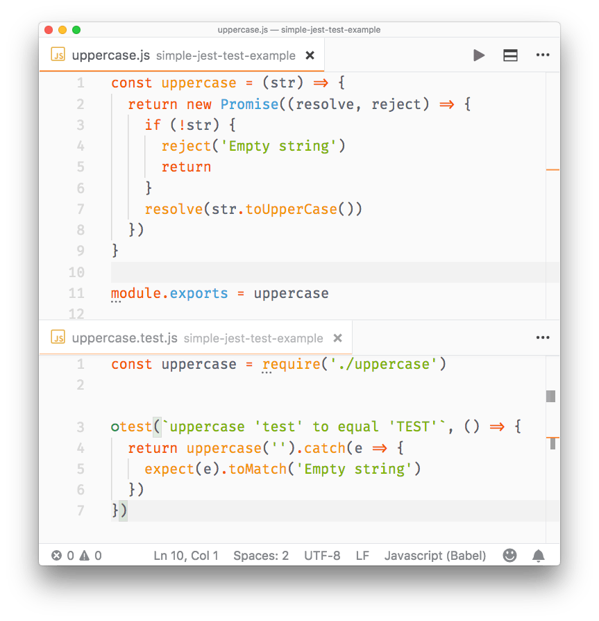
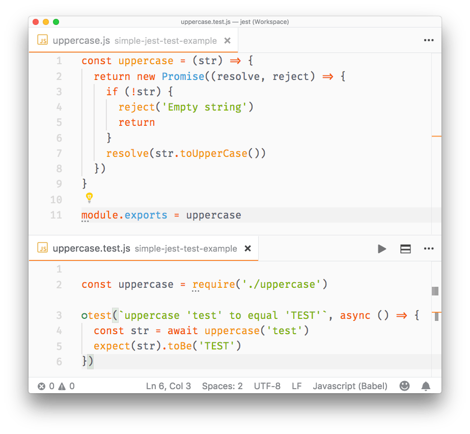
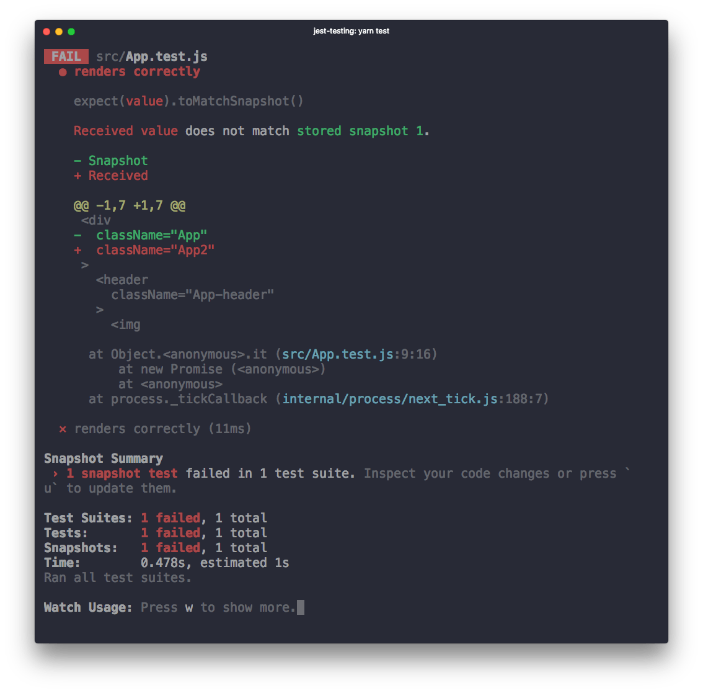

Introduction to Jest
Introduction to Jest
Jest is a library for testing JavaScript code. It's an open source project maintained by Facebook, and it's especially well suited for React code testing, although not limited to that: it can test any JavaScript code. Jest is very fast and easy to use

Jest is a library for testing JavaScript code.
It's an open source project maintained by Facebook, and it's especially well suited for React code testing, although not limited to that: it can test any JavaScript code. Its strengths are:
- it's fast
- it can perform snapshot testing
- it's opinionated, and provides everything out of the box without requiring you to make choices
Jest is a tool very similar to Mocha, although they have differences:
- Mocha is less opinionated, while Jest has a certain set of conventions
- Mocha requires more configuration, while Jest works usually out of the box, thanks to being opinionated
- Mocha is older and more established, with more tooling integrations
In my opinion the biggest feature of Jest is it's an out of the box solution that works without having to interact with other testing libraries to perform its job.
Installation
Jest is automatically installed in create-react-app, so if you use that, you don't need to install Jest.
Jest can be installed in any other project using Yarn:
yarn add --dev jest
or npm:
npm install --save-dev jest
notice how we instruct both to put Jest in the devDependencies part of the package.json file, so that it will only be installed in the development environment and not in production.
Add this line to the scripts part of your package.json file:
{
"scripts": {
"test": "jest"
}
}
so that tests can be run using yarn test or npm run test.
Alternatively, you can install Jest globally:
yarn global add jest
and run all your tests using the jest command line tool.
Create the first Jest test
Projects created with create-react-app have Jest installed and preconfigured out of the box, but adding Jest to any project is as easy as typing
yarn add --dev jest
Add to your package.json this line:
{
"scripts": {
"test": "jest"
}
}
and run your tests by executing yarn test in your shell.
Now, you don't have any tests here, so nothing is going to be executed:

Let's create the first test. Open a math.js file and type a couple functions that we'll later test:
const sum = (a, b) => a + b
const mul = (a, b) => a * b
const sub = (a, b) => a - b
const div = (a, b) => a / b
export default { sum, mul, sub, div }
Now create a math.test.js file, in the same folder, and there we'll use Jest to test the functions defined in math.js:
const { sum, mul, sub, div } = require('./math')
test('Adding 1 + 1 equals 2', () => {
expect(sum(1, 1)).toBe(2)
})
test('Multiplying 1 * 1 equals 1', () => {
expect(mul(1, 1)).toBe(1)
})
test('Subtracting 1 - 1 equals 0', () => {
expect(sub(1, 1)).toBe(0)
})
test('Dividing 1 / 1 equals 1', () => {
expect(div(1, 1)).toBe(1)
})
Running yarn test results in Jest being run on all the test files it finds, and returning us the end result:

Run Jest with VS Code
Visual Studio Code is a great editor for JavaScript development. The Jest extension offers a top notch integration for our tests.
Once you install it, it will automatically detect if you have installed Jest in your devDependencies and run the tests. You can also invoke the tests manually by selecting the Jest: Start Runner command. It will run the tests and stay in watch mode to re-run them whenever you change one of the files that have a test (or a test file):

Matchers
In the previous article I used toBe() as the only matcher:
test('Adding 1 + 1 equals 2', () => {
expect(sum(1, 1)).toBe(2)
})
A matcher is a method that lets you test values.
Most commonly used matchers, comparing the value of the result of expect() with the value passed in as argument, are:
toBecompares strict equality, using===toEqualcompares the values of two variables. If it's an object or array, it checks the equality of all the properties or elementstoBeNullis true when passing a null valuetoBeDefinedis true when passing a defined value (opposite to the above)toBeUndefinedis true when passing an undefined valuetoBeCloseTois used to compare floating values, avoiding rounding errorstoBeTruthytrue if the value is considered true (like anifdoes)toBeFalsytrue if the value is considered false (like anifdoes)toBeGreaterThantrue if the result of expect() is higher than the argumenttoBeGreaterThanOrEqualtrue if the result of expect() is equal to the argument, or higher than the argumenttoBeLessThantrue if the result of expect() is lower than the argumenttoBeLessThanOrEqualtrue if the result of expect() is equal to the argument, or lower than the argumenttoMatchis used to compare strings with regular expression pattern matchingtoContainis used in arrays, true if the expected array contains the argument in its elements settoHaveLength(number): checks the length of an arraytoHaveProperty(key, value): checks if an object has a property, and optionally checks its valuetoThrowchecks if a function you pass throws an exception (in general) or a specific exceptiontoBeInstanceOf(): checks if an object is an instance of a class
All those matchers can be negated using .not. inside the statement, for example:
test('Adding 1 + 1 does not equal 3', () => {
expect(sum(1, 1)).not.toBe(3)
})
For use with promises, you can use .resolves and .rejects:
expect(Promise.resolve('lemon')).resolves.toBe('lemon')
expect(Promise.reject(new Error('octopus'))).rejects.toThrow('octopus')
Setup
Before running your tests you will want to perform some initialization.
To do something once before all the tests run, use the beforeAll() function:
beforeAll(() => {
//do something
})
To perform something before each test runs, use beforeEach():
beforeEach(() => {
//do something
})
Teardown
Just as you can do with setup, you can also perform something after each test runs:
afterEach(() => {
//do something
})
and after all tests end:
afterAll(() => {
//do something
})
Group tests using describe()
You can create groups of tests, in a single file, that isolate the setup and teardown functions:
describe('first set', () => {
beforeEach(() => {
//do something
})
afterAll(() => {
//do something
})
test(/*...*/)
test(/*...*/)
})
describe('second set', () => {
beforeEach(() => {
//do something
})
beforeAll(() => {
//do something
})
test(/*...*/)
test(/*...*/)
})
Testing asynchronous code
Asynchronous code in modern JavaScript can have basically 2 forms: callbacks and promises. On top of promises we can use async/await.
Callbacks
You can't have a test in a callback, because Jest won't execute it - the execution of the test file ends before the callback is called. To fix this, pass a parameter to the test function, which you can conveniently call done. Jest will wait until you call done() before ending that test:
//uppercase.js
function uppercase(str, callback) {
callback(str.toUpperCase())
}
module.exports = uppercase
//uppercase.test.js
const uppercase = require('./src/uppercase')
test(`uppercase 'test' to equal 'TEST'`, (done) => {
uppercase('test', (str) => {
expect(str).toBe('TEST')
done()
}
})

Promises
With functions that return promises, we simply return a promise from the test:
//uppercase.js
const uppercase = str => {
return new Promise((resolve, reject) => {
if (!str) {
reject('Empty string')
return
}
resolve(str.toUpperCase())
})
}
module.exports = uppercase
//uppercase.test.js
const uppercase = require('./uppercase')
test(`uppercase 'test' to equal 'TEST'`, () => {
return uppercase('test').then(str => {
expect(str).toBe('TEST')
})
})

Promises that are rejected can be tested using .catch():
//uppercase.js
const uppercase = str => {
return new Promise((resolve, reject) => {
if (!str) {
reject('Empty string')
return
}
resolve(str.toUpperCase())
})
}
module.exports = uppercase
//uppercase.test.js
const uppercase = require('./uppercase')
test(`uppercase 'test' to equal 'TEST'`, () => {
return uppercase('').catch(e => {
expect(e).toMatch('Empty string')
})
})

Async/await
To test functions that return promises we can also use async/await, which makes the syntax very straightforward and simple:
//uppercase.test.js
const uppercase = require('./uppercase')
test(`uppercase 'test' to equal 'TEST'`, async () => {
const str = await uppercase('test')
expect(str).toBe('TEST')
})

Mocking
In testing, mocking allows you to test functionality that depends on:
- Database
- Network requests
- access to Files
- any External system
so that:
- your tests run faster, giving a quick turnaround time during development
- your tests are independent of network conditions, or the state of the database
- your tests do not pollute any data storage because they do not touch the database
- any change done in a test does not change the state for subsequent tests, and re-running the test suite should start from a known and reproducible starting point
- you don't have to worry about rate limiting on API calls and network requests
Mocking is useful when you want to avoid side effects (e.g. writing to a database) or you want to skip slow portions of code (like network access), and also avoids implications with running your tests multiple times (e.g. imagine a function that sends an email or calls a rate-limited API).
Even more important, if you are writing a Unit Test, you should test the functionality of a function in isolation, not with all its baggage of things it touches.
Using mocks, you can inspect if a module function has been called and which parameters were used, with:
expect().toHaveBeenCalled(): check if a spied function has been calledexpect().toHaveBeenCalledTimes(): count how many times a spied function has been calledexpect().toHaveBeenCalledWith(): check if the function has been called with a specific set of parametersexpect().toHaveBeenLastCalledWith(): check the parameters of the last time the function has been invoked
Spy packages without affecting the functions code
When you import a package, you can tell Jest to "spy" on the execution of a particular function, using spyOn(), without affecting how that method works.
Example:
const mathjs = require('mathjs')
test(`The mathjs log function`, () => {
const spy = jest.spyOn(mathjs, 'log')
const result = mathjs.log(10000, 10)
expect(mathjs.log).toHaveBeenCalled()
expect(mathjs.log).toHaveBeenCalledWith(10000, 10)
})
Mock an entire package
Jest provides a convenient way to mock an entire package. Create a __mocks__ folder in the project root, and in this folder create one JavaScript file for each of your packages.
Say you import mathjs. Create a __mocks__/mathjs.js file in your project root, and add this content:
module.exports = {
log: jest.fn(() => 'test')
}
This will mock the log() function of the package. Add as many functions as you want to mock:
const mathjs = require('mathjs')
test(`The mathjs log function`, () => {
const result = mathjs.log(10000, 10)
expect(result).toBe('test')
expect(mathjs.log).toHaveBeenCalled()
expect(mathjs.log).toHaveBeenCalledWith(10000, 10)
})
Mock a single function
More simply, you can mock a single function using jest.fn():
const mathjs = require('mathjs')
mathjs.log = jest.fn(() => 'test')
test(`The mathjs log function`, () => {
const result = mathjs.log(10000, 10)
expect(result).toBe('test')
expect(mathjs.log).toHaveBeenCalled()
expect(mathjs.log).toHaveBeenCalledWith(10000, 10)
})
You can also use jest.fn().mockReturnValue('test') to create a simple mock that does nothing except returning a value.
Pre-built mocks
You can find pre-made mocks for popular libraries. For example this package https://github.com/jefflau/jest-fetch-mock allows you to mock fetch() calls, and provide sample return values without interacting with the actual server in your tests.
Snapshot testing
Snapshot testing is a pretty cool feature offered by Jest. It can memorize how your UI components are rendered, and compare it to the current test, raising an error if there's a mismatch.
This is a simple test on the App component of a simple create-react-app application (make sure you install react-test-renderer):
import React from 'react'
import App from './App'
import renderer from 'react-test-renderer'
it('renders correctly', () => {
const tree = renderer.create(<App />).toJSON()
expect(tree).toMatchSnapshot()
})
the first time you run this test, Jest saves the snapshot to the __snapshots__ folder. Here's what App.test.js.snap contains:
// Jest Snapshot v1, https://goo.gl/fbAQLP
exports[`renders correctly 1`] = `
<div
className="App"
>
<header
className="App-header"
>
<img
alt="logo"
className="App-logo"
src="logo.svg"
/>
<h1
className="App-title"
>
Welcome to React
</h1>
</header>
<p
className="App-intro"
>
To get started, edit
<code>
src/App.js
</code>
and save to reload.
</p>
</div>
`
As you see it's the code that the App component renders, nothing more.
The next time the test compares the output of <App /> to this. If App changes, you get an error:

When using yarn test in create-react-app you are in watch mode, and from there you can press w and show more options:
Watch Usage
› Press u to update failing snapshots.
› Press p to filter by a filename regex pattern.
› Press t to filter by a test name regex pattern.
› Press q to quit watch mode.
› Press Enter to trigger a test run.
If your change is intended, pressing u will update the failing snapshots, and make the test pass.
You can also update the snapshot by running jest -u (or jest --updateSnapshot) outside of watch mode.